TT Score
Recording reviews and opening investigations
Having analyzed the trading activity, you are ready to begin reviewing the clusters to determine whether additional investigation is needed. During the review process, TT Score lets you attach notes to individual clusters and to daily cluster groups to record your dispositions. To provide traceability, TT Score maintains a historical record of all notes that are added to a cluster or cluster group.
Reviewing clusters and cluster groups
In TT Score, you can review clusters or cluster groups and provide disposition comments of your review. For clusters with higher risk scores, you can examine the behavior more closely and create notes of your findings. When reviewing clusters with lower scores, you can simply add a note that the cluster has been reviewed.
Reviews can be started from the Cluster List and Daily Cluster Groups view.
To add review clusters and cluster groups:
-
Display the Cluster List or Daily Cluster Groups view for the selected dates and models.
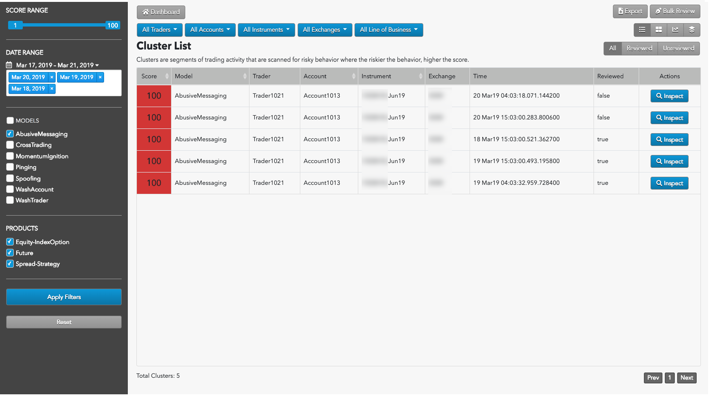
-
For an individual cluster (or cluster group), click Inspect.
The Cluster Scorecard for the selected cluster appears.
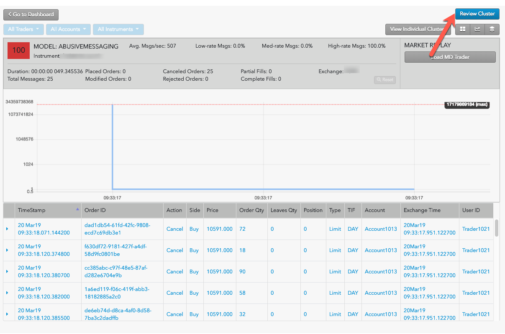
-
Evaluate the cluster details to determine whether problematic trading activity might have occurred; then click Review Cluster.
The Review panel appears at the left.
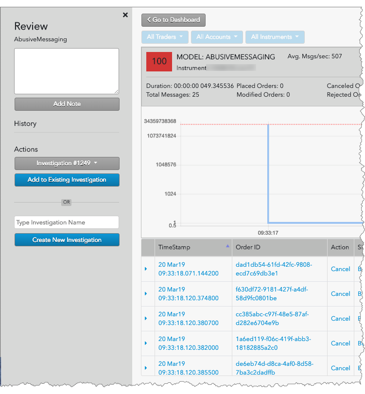
-
Enter any notes you want to include with the review, and click Add Note.
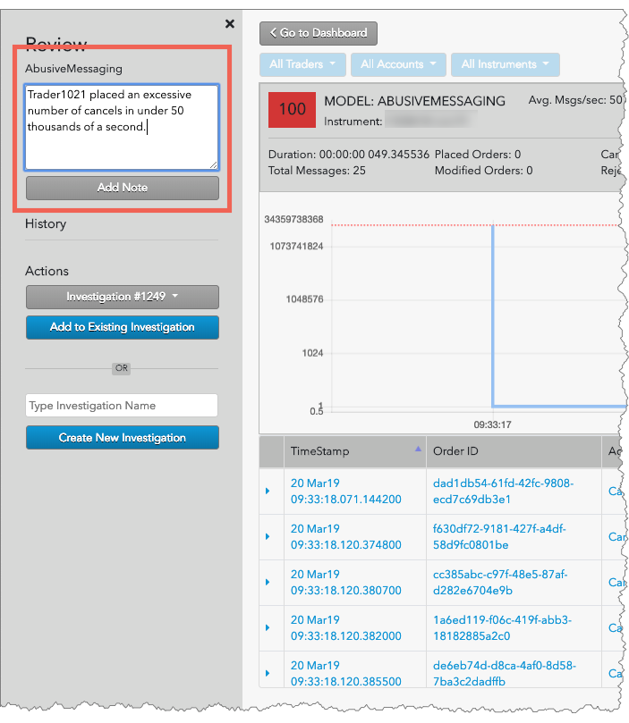
In the Cluster List, the Reviewed column for the cluster now shows true to indicate that the cluster has been reviewed.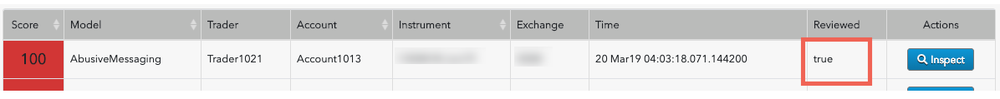
You have successfully added review notes to a cluster. If suspect that a cluster or cluster group requires a more detailed analysis, you can begin an investigation with the reviews you create.
Creating a bulk review
The cluster list and group views also provide you with the ability to mark all clusters for the selected model and dates as being "reviewed". You can then conduct further investigations of each cluster as needed.
To create a bulk review:
- Display the Cluster List or Daily Cluster Groups view for the selected dates and models.
- Click Bulk Review in the upper right corner of the cluster list or group view.
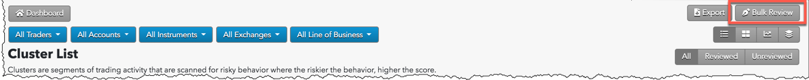
- Add notes to the bulk review dialog box as needed and click Review.
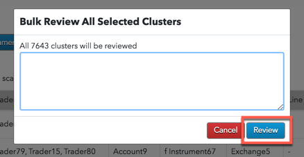
All clusters for the selected data are marked as "Reviewed".
Adding cluster reviews to an investigation
After reviewing various clusters or cluster groups, you might determine that more investigation or follow-up is required. If so, you can open an investigation from a review or add your reviews to an existing investigation. Using investigations lets you create dispositions for problematic trading activity that occurs across multiple clusters or even across multiple traders and accounts.
To start an investigation into a cluster or cluster group:
- Start a review for a cluster or cluster group. As you can see, the notes you previously entered are now a part of the cluster's review history.
-
In the Type Investigation Name field, enter a name for the investigation and click Create New Investigation.
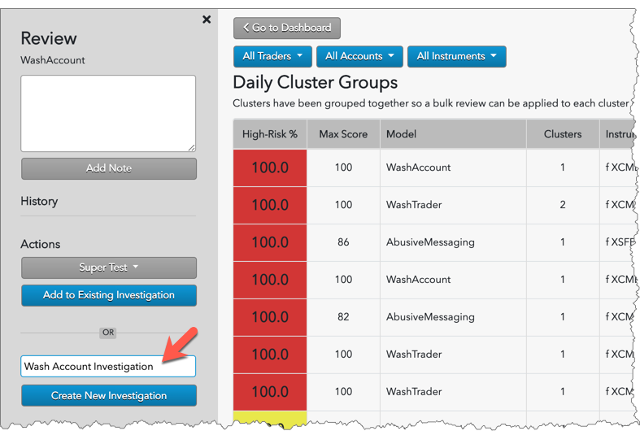
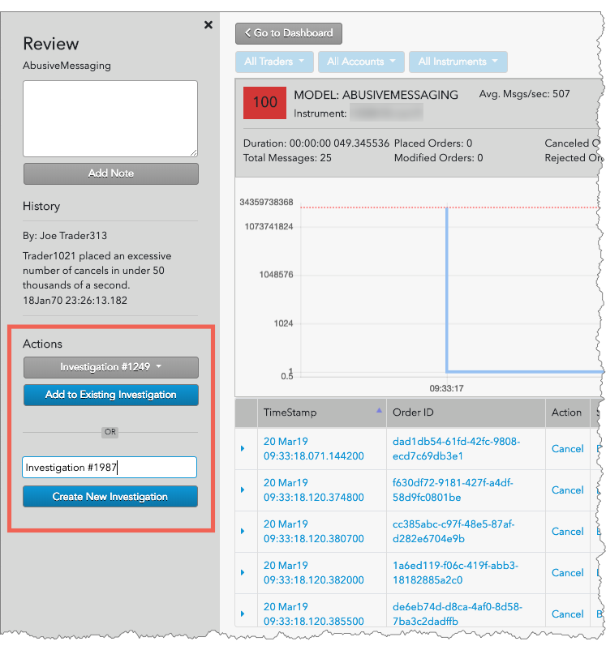
Alternatively, you can select an existing investigation and click Add to Existing Investigation to add this review to the investigation. The investigation is added to the OPEN INVESTIGATIONS section of the TT Score Dashboard.
You have successfully added a cluster review to an investigation.
Managing investigations
From the TT Score Dashboard, you can view existing investigations. Within each investigation report you can track the investigaton's progress, assign a different owner to manage the investigation, and add comments or a final disposition with attachments.
To manage an investigation:
- Display the TT Score Dashboard.
- In the OPEN INVESTIGATIONS table, click View Investigation in the "Action" column for an investigation.
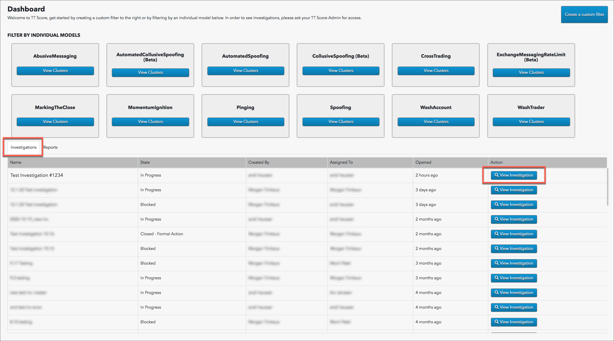
The investigation details appear.

The following sections are included on this screen:
- Clusters and Daily Group Clusters: Lists the clusters and cluster groups being investigated.
- Status: Shows a list of state changes, and allows you to change the status.
- Owner: Shows a list of owners who can be assigned to the investigation, and allows you to change owners. Note: Only users with TT Score Administrator permissions are listed in the owner selector.
- History: Shows the full history of investigation activity, including who created the investigation.
- Comment: Shows a history of comments added to the investigation, and allows you to add comments or a final disposition and upload attachments. Note: A previously added comment cannot be edited or deleted. To address a previously added comment, you must add a new one.
- To display the Clusters and Daily Cluster Groups that are included in the investigation, click Clusters or Daily Cluster Groups, respectively.
-
To change the investigation status, select the new status from the Status dropdown.
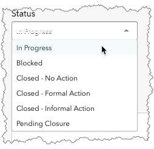
- To change the owner of the investigation, select the desired person from the Owner dropdown.
-
To add comments or upload attachments, use the Comment section.
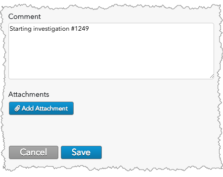
- After making changes to the investigation, click Save.
You have succesfully managed changes to an investigation.